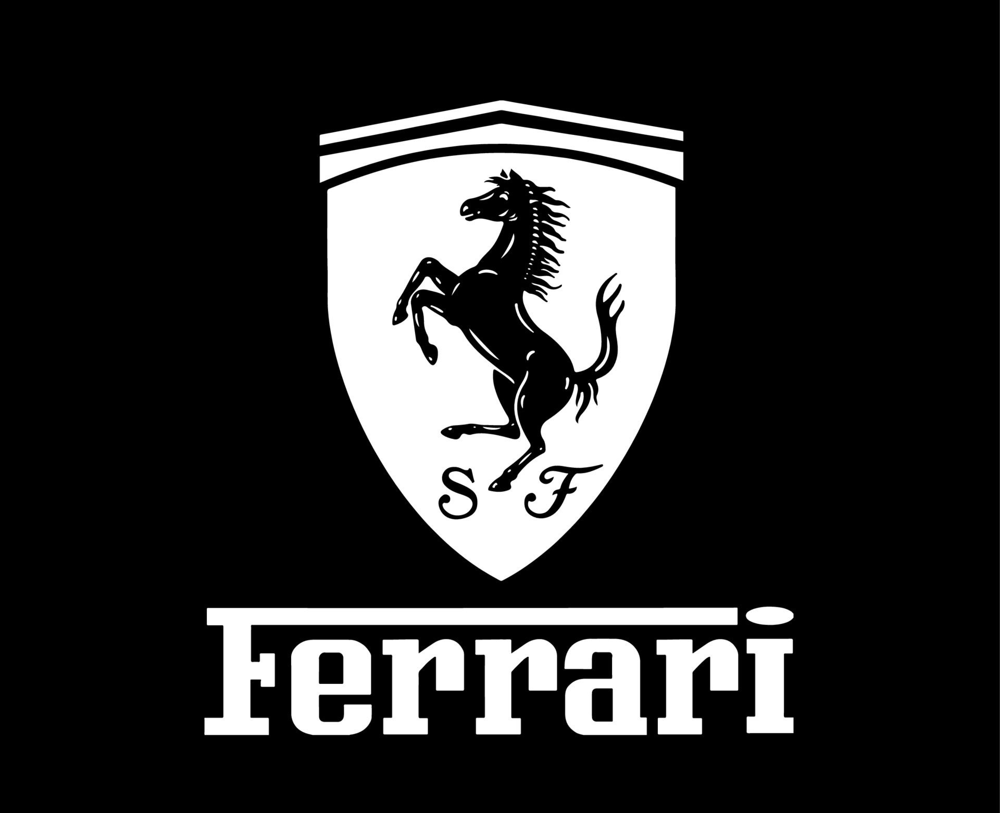

Loading...
Supercar adalah klasifikasi mobil sport yang memiliki performa di atas rata-rata.
Dari segi produksi
Pada umumnya, mobil super diproduksi dalam jumlah sangat terbatas sehingga menjadi sangat eksklusif selain agar tidak sembarangan dimiliki oleh masyarakat awam karena untuk mengendarai mobil ini harus memiliki kemampuan atau keahlian khusus karena kecepatan dan kekuatan mobil super ini sangat luar biasa. Beberapa mobil super bahkan tidak dijual untuk umum karena hanya diciptakan untuk keperluan riset atau sekadar pemecahan rekor semata.Dari segi harga
Mayoritas mobil super memiliki merek yang berkelas seperti Ferrari, Lamborghini dan Bugatti. Kebanyakan berasal dari Eropa khususnya pabrikan yang berasal dari Italia atau Jerman. Adapun beberapa pabrikan yang mereknya berkelas umum seperti Toyota, Nissan dan Honda yang membuat mobil super seperti NSX, Skyline dan Supra. Ada juga tipe mobil super asal Amerika yang diidentifikasikan sebagai 'mobil berotot' atau 'American Muscle' seperti Corvette dari Chevrolet atau Mustang dari Ford.Dari segi teknologi
Mobil super memiliki teknologi-teknologi yang modern, biasa lebih berfokus pada performa mobil. Penggunaan bahan yang ringan dan kuat juga diterapkan seperti serat karbon dan aluminium . Rem karbon keramik juga sudah umum di dunia mobil super . Penggunaan paddleshift atau transmisi semi-otomatis sebagai pengganti transmisi gigi manual biasa juga sudah cukup umum.Desain bodi
Mobil super harus berpintu dua. Bahkan ada beberapa mobil super yang hanya berpengemudi tunggal seperti mobil super Lamborghini Aventador atau Lamborghini Egoista. Mayoritas mobil super pun memiliki bodi yang pendek demi mengutamakan pengendalian pada kecepatan tinggi. Rata-rata mobil super pun lebar ukurannya. Namun beberapa mobil super modern umumnya memiliki bodi yang lebih sempit. Banyak mobil super modern yang letak mesinnya di tengah belakang untuk membuat titik gravitasi menjadi seimbang sehingga pengendalian lebih stabil dan aman saat kecepatan tinggi. Mobil-mobil super umumnya memiliki visibilitas yang kurang baik,artinya banyak pandangan keluar yang dicela,membuatnya susah saat dibawa ke tempat sempit atau saat parkir.Namun beberapa mobil super zaman sekarang memiliki visibilitas yang lebih baik. Mobil super umumnya memiliki ground clearance yang sangat pendek sehingga hanya bisa melewati jalan-jalan tertentu. Mobil super sering kali dikritisi di tanah air karena tidak dapat melewati rata-rata polisi tidur di Indonesia yang tinggi. Selain itu, banyaknya jalan berlubang juga dapat merusak mobil super. Belum lagi tingkat kemacetan di kota-kota besar terbukti tidak cocok untuk mesin mobil super yang dapat dilihat dari banyaknya kasus mobil Lamborghini yang mogok ketika berada di tengah kemacetan karena mesin terbakar akibat kepanasan.Contoh Merek Supercar
